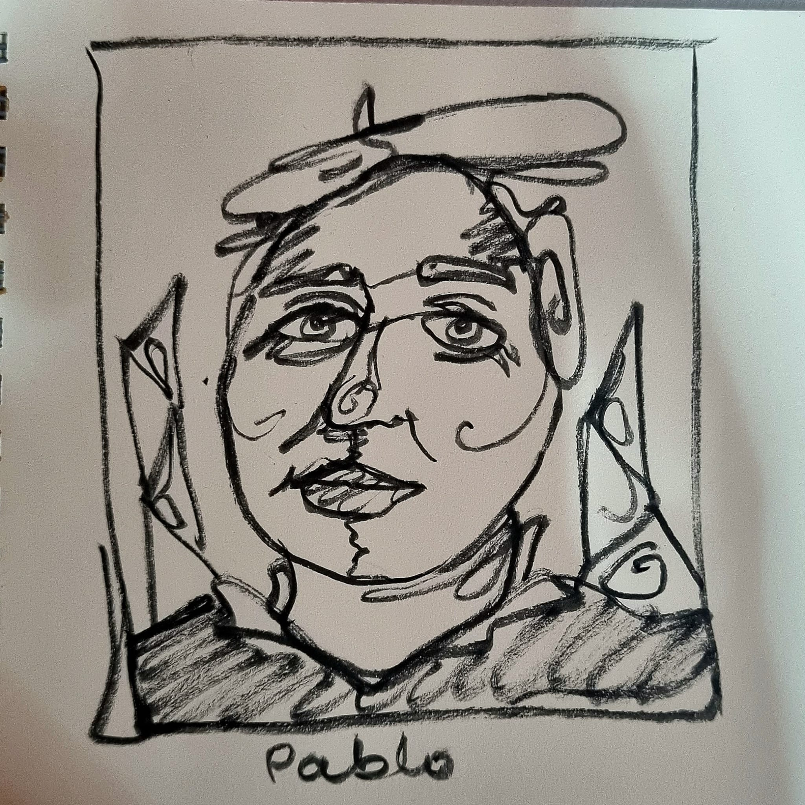
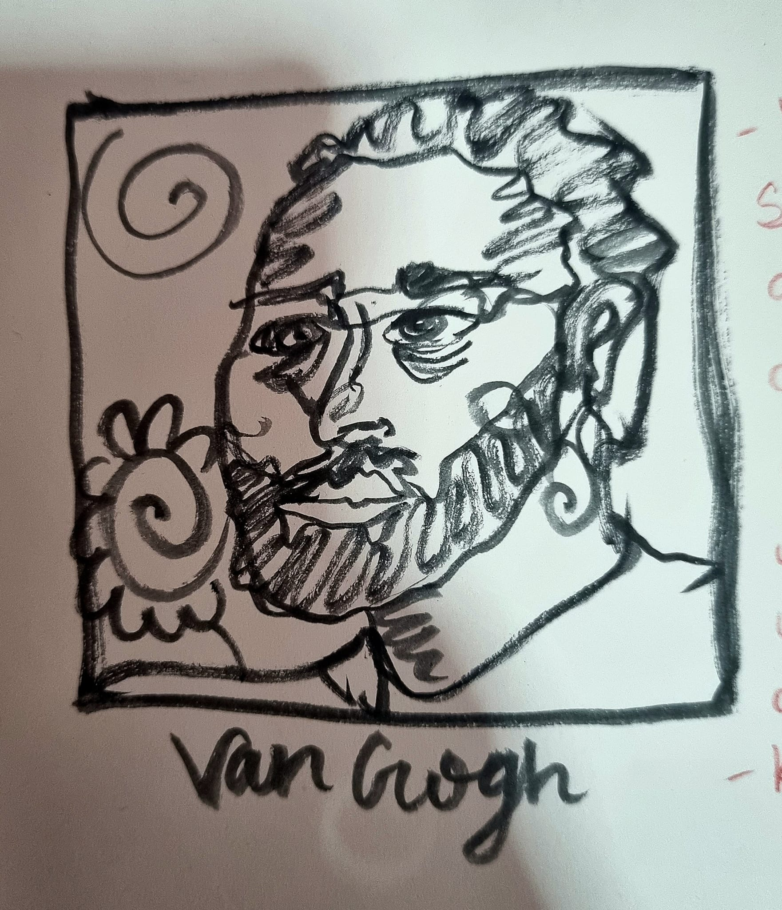

Here is my rendition of the infamous Pablo Picasso.
Being one of the most influential painters of the previous century,
he introduced to the world of art: Cubism, Georges
Barque and contributions to Symbolism and Surrealism.

Drawn here is a symbolic, almost childlike sketch
of the ever so famous Vincent Van Gogh. Van Gogh
sold but one painting while alive, but many years
after his death was when his art was truly appreciated
. Known for The Starry Night.